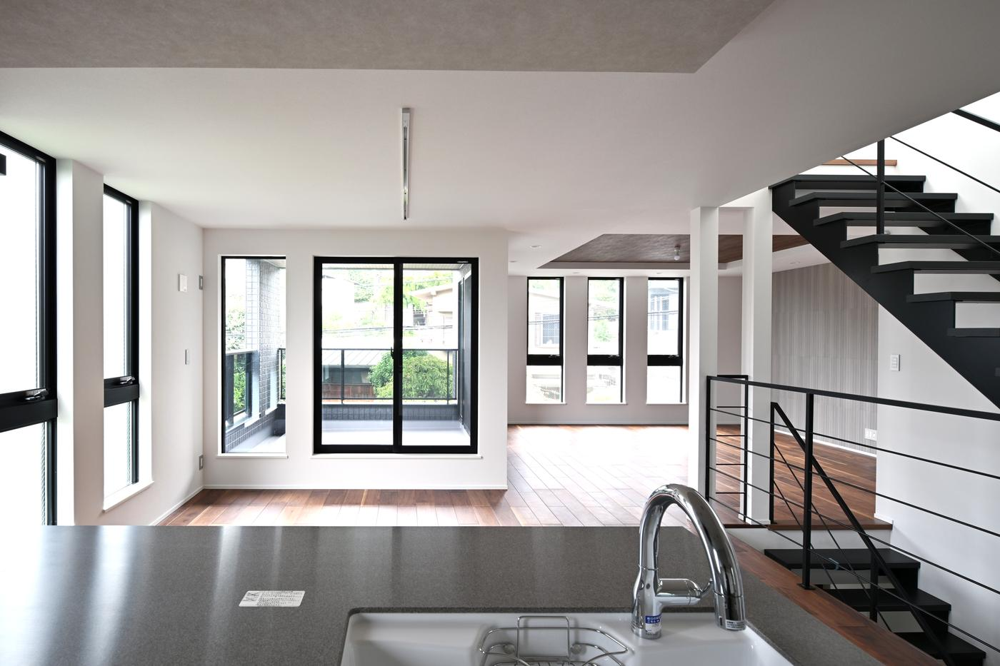
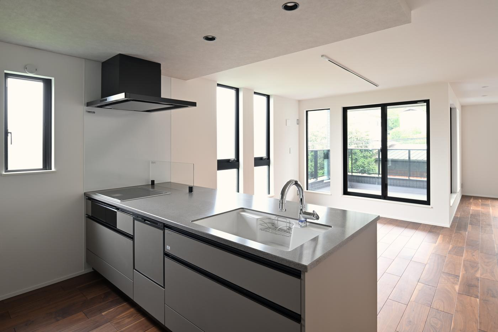
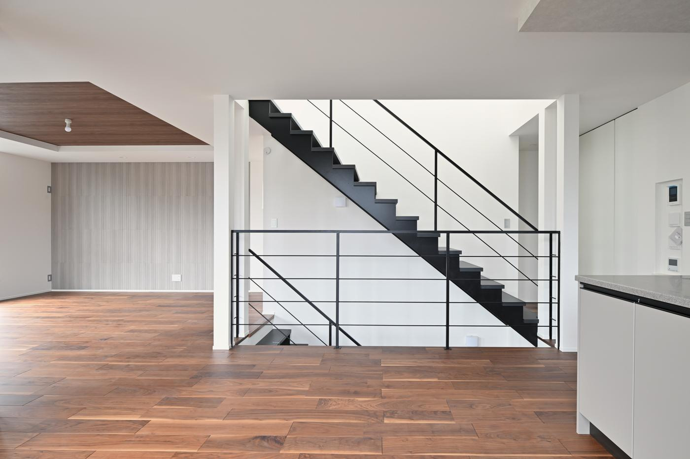
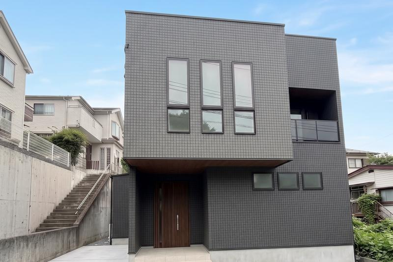
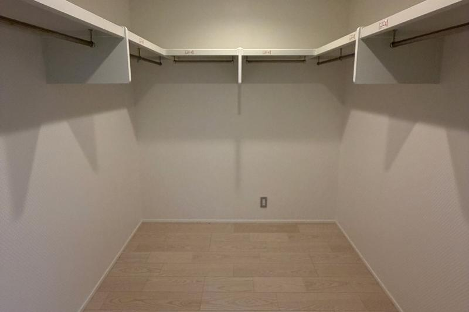

都心なのに、 この広さ。 このゆとり。
横浜市菊名完成見学会 開催中
KIKUNA MODEL HOUSE
横浜市港北区・菊名に誕生した、
駅徒歩6分の便利さと、
広さのゆとりを両立する家。
※見学・ご相談はすべて無料です
完成見学会を予約する お電話でのご予約 0120-021-541 受付 9:30-18:00（火・水定休）FLOOR PLAN
ゆとりを生む、間取り
木造2階建て＋PH階 3LDK＋ルーフバルコニー
延床面積 143.77㎡（約43.48坪）
-
主寝室 10.0帖／WIC 3.4帖／SIC 1.7帖
寝室 6.2帖・6.0帖 -
LDK 28.59帖／パントリー 3.0帖
-
ルーフバルコニー 約22帖
※図面をタップすると拡大します
GALLERY
写真でめぐる、菊名の家
外観から、LDK、鉄骨階段、収納、屋上まで。
完成した家の雰囲気を、写真でご覧ください。
※写真をタップすると、大きく表示します



